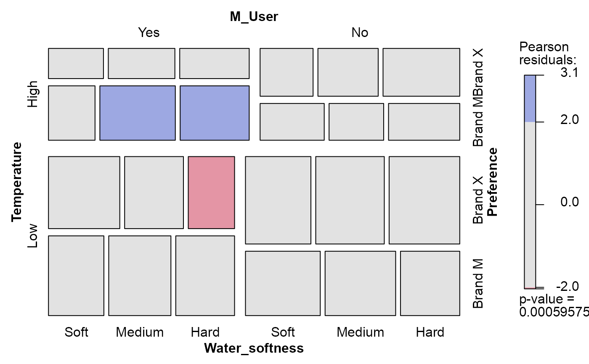

Cross-classification of a sample of 1008 consumers according to (a) the softness of the laundry water used, (b) previous use of detergent Brand M, (c) the temperature of laundry water used and (d) expressed preference for Brand X or Brand M in a blind trial.
Format
A 4-dimensional array resulting from cross-tabulating 4 variables for 1008 observations. The variable names and their levels are:
| dim | Name | Levels |
| 1 | Temperature | "High", "Low" |
| 2 | M_User | "Yes", "No" |
| 3 | Preference | "Brand X", "Brand M" |
| 4 | Water_softness | "Soft", "Medium", "Hard" |
Source
Fienberg, S. E. (1980). The Analysis of Cross-Classified Categorical Data Cambridge, MA: MIT Press, p. 71.
References
Ries, P. N. & Smith, H. (1963). The use of chi-square for preference testing in multidimensional problems. Chemical Engineering Progress, 59, 39-43.
Examples
data(Detergent)
# basic mosaic plot
mosaic(Detergent, shade=TRUE)

require(MASS)
(det.mod0 <- loglm(~ Preference + Temperature + M_User + Water_softness,
data=Detergent))
#> Call:
#> loglm(formula = ~Preference + Temperature + M_User + Water_softness,
#> data = Detergent)
#>
#> Statistics:
#> X^2 df P(> X^2)
#> Likelihood Ratio 42.92866 18 0.0008190181
#> Pearson 43.90225 18 0.0005957483
# examine addition of two-way terms
add1(det.mod0, ~ .^2, test="Chisq")
#> Single term additions
#>
#> Model:
#> ~Preference + Temperature + M_User + Water_softness
#> Df AIC LRT Pr(>Chi)
#> <none> 54.929
#> Preference:Temperature 1 52.567 4.3616 0.03676 *
#> Preference:M_User 1 36.347 20.5815 5.715e-06 ***
#> Preference:Water_softness 2 58.533 0.3953 0.82066
#> Temperature:M_User 1 55.676 1.2531 0.26296
#> Temperature:Water_softness 2 52.830 6.0991 0.04738 *
#> M_User:Water_softness 2 57.854 1.0751 0.58418
#> ---
#> Signif. codes: 0 '***' 0.001 '**' 0.01 '*' 0.05 '.' 0.1 ' ' 1
# model for Preference as a response
(det.mod1 <- loglm(~ Preference + (Temperature * M_User * Water_softness),
data=Detergent))
#> Call:
#> loglm(formula = ~Preference + (Temperature * M_User * Water_softness),
#> data = Detergent)
#>
#> Statistics:
#> X^2 df P(> X^2)
#> Likelihood Ratio 32.82562 11 0.0005615017
#> Pearson 32.46939 11 0.0006410272
mosaic(det.mod0)